RGB Midi-Ring
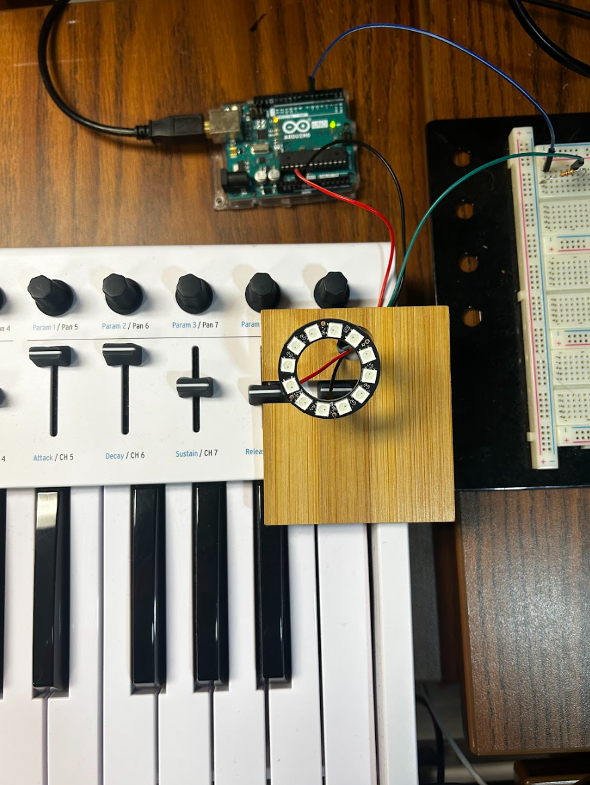
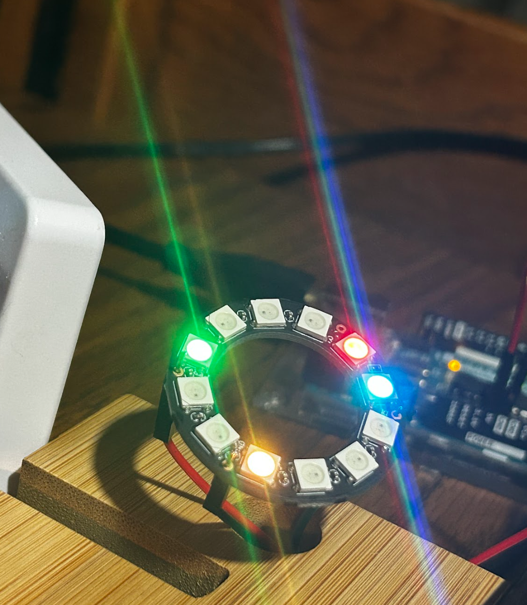
Live Neopixel Control via C++ Midi Interpreter
Ever wondered what it would look like if your piano playing could be visuallized on a 12-LED NeoPixel ring? Well wonder no longer! This project uses an arduino, a laptop, a keyboard, and a neopixel ring to create a vibrant light show while you play. The lights change color depending on the octave and each of the 12 notes represents 1 led.
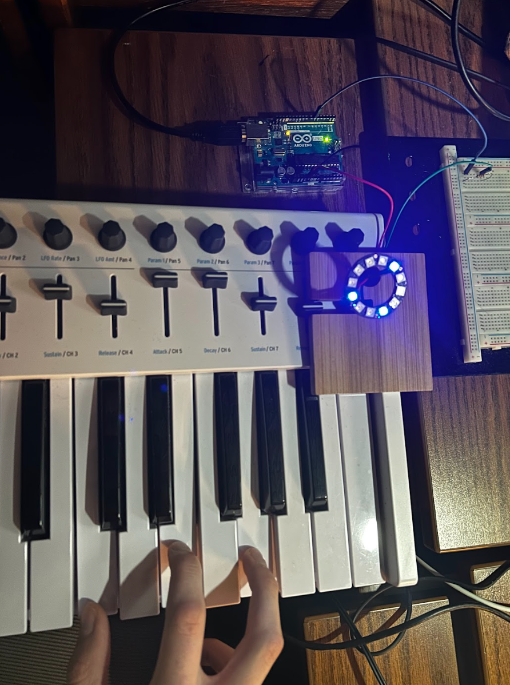
Process
Here are my original designs for the project aswell as a potential timeline.
"I want to use an arduino to take midi inputs and convert it into commands for a neopixel led light system. This should be able to work with midi input from a midi-keyboard and midi-output from a program on my laptop."
BASIC LAYOUT
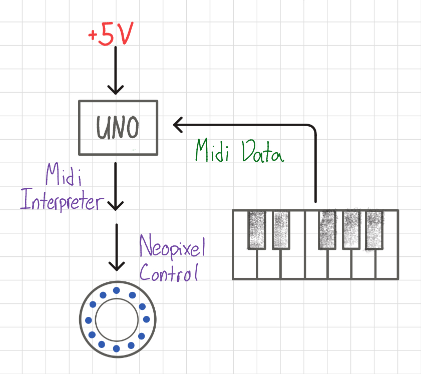
The above chart shows how a very basic system would be set up. The keyboard would plug directly into an independently powered arduino running a midi interpreter, all to control the neopixel light. This would work, but since the keyboard is strictly MIDI, there would be no sound, and this doesn't account for the keyboard requiring power as well (which I don't have the cable to do independently). Below is a more complicated but more versatile system.
VERSATILE LAYOUT
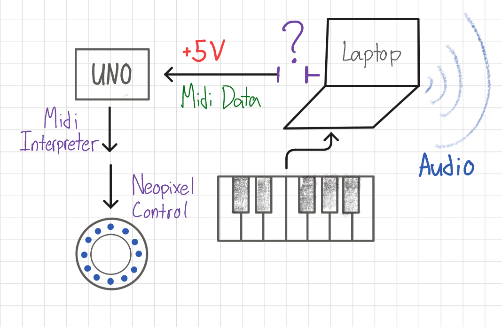
Now the laptop serves as an intermediary between the keyboard and the arduino, providing audio through a DAW program as well as power to all components. However, there is an unresolved bridge between the laptop and the arduino, particularly for the MIDI data. How am I supposed to route the midi through both FL Studio (my DAW of choice) and into the arduino?
DATA LOGISTICS
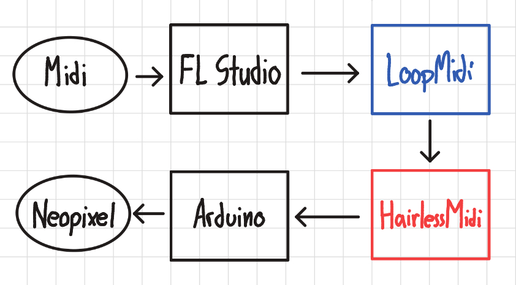
Using two third-party programs, LoopMidi + HairlessMidi, I am able to route all the necessary data where it needs to go. LoopMidi handles creating virtual input/outputs that can be detected by other programs like FL Studio, while HairlessMidi provides the direct bridge to the Arduino.
C++ MIDI INTERPRETER
View Midi Interpreter Code
#include <Adafruit_NeoPixel.h>
#define LED_PIN 6
#define LED_COUNT 12
Adafruit_NeoPixel ring(LED_COUNT, LED_PIN, NEO_GRB + NEO_KHZ800);
static long color0 = ring.Color(50, 0, 0);
static long color1 = ring.Color(255, 0, 0);
static long color2 = ring.Color(200, 100, 0);
static long color3 = ring.Color(0, 255, 0);
static long color4 = ring.Color(0, 255, 255);
static long color5 = ring.Color(0, 0, 255);
static long color6 = ring.Color(255, 0, 255);
static long color7 = ring.Color(60, 0, 255);
static long color8 = ring.Color(50, 50, 50);
void setup() {
Serial.begin(9600);
ring.begin();
ring.show();
ring.setBrightness(15);
ring.setPixelColor(3, color7); //initializes a pixel for testing purposes
ring.show();
}
void loop() {
static int midiBytes [3] = {0x00, 0x00, 0x00};
static int midicount = 0;
while (Serial.available() > 0) {
midiBytes[midicount] = Serial.read();
midicount++;
if (midicount == 3) {
if (midiBytes[0] == 0x90) //NOTE ON, CHANNEL 1
{
int note = midiBytes[1];
long new_color = color0;
if (note < 12) new_color = color0;
else if (note < 24) new_color = color0;
else if (note < 36) new_color = color1;
else if (note < 48) new_color = color2;
else if (note < 60) new_color = color3;
else if (note < 72) new_color = color4;
else if (note < 84) new_color = color5;
else if (note < 96) new_color = color6;
else if (note < 108) new_color = color7;
else if (note < 127) new_color = color8;
note = note % 12;
switch(note) {
case 0x00:
ring.setPixelColor(0, new_color);
break;
case 0x01:
ring.setPixelColor(1, new_color);
break;
case 0x02:
ring.setPixelColor(2, new_color);
break;
case 0x03:
ring.setPixelColor(3, new_color);
break;
case 0x04:
ring.setPixelColor(4, new_color);
break;
case 0x05:
ring.setPixelColor(5, new_color);
break;
case 0x06:
ring.setPixelColor(6, new_color);
break;
case 0x07:
ring.setPixelColor(7, new_color);
break;
case 0x08:
ring.setPixelColor(8, new_color);
break;
case 0x09:
ring.setPixelColor(9, new_color);
break;
case 0x0A:
ring.setPixelColor(10, new_color);
break;
case 0x0B:
ring.setPixelColor(11, new_color);
break;
}
ring.show();
}
else if (midiBytes[0] == 0x80) //NOTE OFF, CHANNEL 1
{
int note = midiBytes[1];
long new_color = ring.Color(0,0,0);
note = note % 12;
switch(note) {
case 0x00:
ring.setPixelColor(0, new_color);
break;
case 0x01:
ring.setPixelColor(1, new_color);
break;
case 0x02:
ring.setPixelColor(2, new_color);
break;
case 0x03:
ring.setPixelColor(3, new_color);
break;
case 0x04:
ring.setPixelColor(4, new_color);
break;
case 0x05:
ring.setPixelColor(5, new_color);
break;
case 0x06:
ring.setPixelColor(6, new_color);
break;
case 0x07:
ring.setPixelColor(7, new_color);
break;
case 0x08:
ring.setPixelColor(8, new_color);
break;
case 0x09:
ring.setPixelColor(9, new_color);
break;
case 0x0A:
ring.setPixelColor(10, new_color);
break;
case 0x0B:
ring.setPixelColor(11, new_color);
break;
}
ring.show();
}
midicount = 0;
}
}
}
This was the really fun part of the project where I had to figure out how MIDI actually communicates data. This interpreter detects NOTE-ON and NOTE-OFF signals and colors the desired lights a color depending on the octave.
Musical Observations
While messing around on the keyboard, I discovered interesting patterns that mapped chords directly to shapes on the neopixel ring. It was very interesting to me how
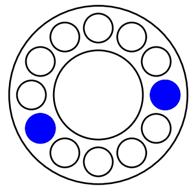
5th
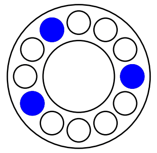
Major 3rd
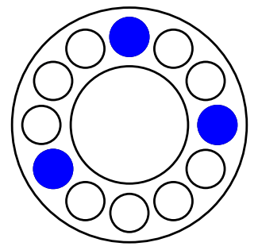
Minor 3rd
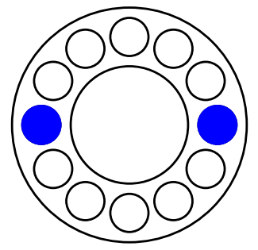
Tritone
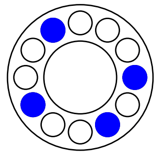
Dominant 7th
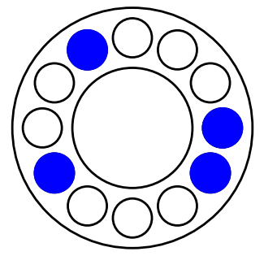
Major 7th
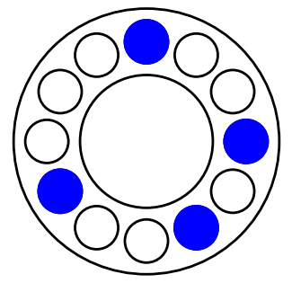
Minor 7th
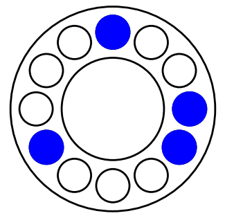
Minor/Major 7th
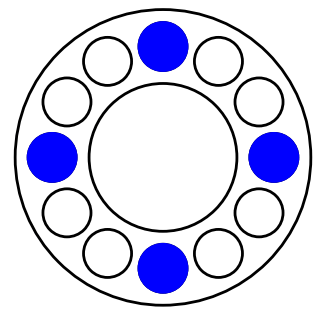
Diminished 7th
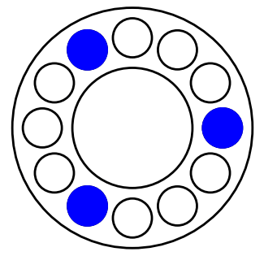
Augmented 7th
View Visual Generation Code
import matplotlib.pyplot as plt
import math
def light_ring(offset,*pos):
# creates circles at any number of positions or 'halfsteps'
# starts rightmost (0), increments counter-clockwise
# offset increments that starting position counter-clockwise
n=0
for x in range(len(pos)):
angle = (pos[n] + offset) * 30 # 360/12
x_pos = 0.5 + 0.3 * math.cos(math.radians(angle))
y_pos = 0.5 + 0.3 * math.sin(math.radians(angle))
circle = plt.Circle((x_pos, y_pos), inner_led_radius, color='blue', fill=True, linewidth=2)
ax.add_patch(circle)
n = n+1
for num in range(12):
# saves 12 files, each an offset iteration of the specified 'chord'/positions
fig, ax = plt.subplots()
ax.set_aspect('equal')
ax.axis('off')
circ_outer_radius = 0.4
circ_inner_radius = 0.2
inner_led_radius = 0.065
circle_outer = plt.Circle((0.5, 0.5), circ_outer_radius, color='black', fill=False, linewidth=2)
circle_inner = plt.Circle((0.5, 0.5), circ_inner_radius, color='black', fill=False, linewidth=2)
ax.add_patch(circle_outer)
ax.add_patch(circle_inner)
for x in range(12):
# generates the empty encircled circles
angle = x * 30 # 360/12
x_pos = 0.5 + 0.3 * math.cos(math.radians(angle))
y_pos = 0.5 + 0.3 * math.sin(math.radians(angle))
circle = plt.Circle((x_pos, y_pos), inner_led_radius, color='black', fill=False, linewidth=2)
ax.add_patch(circle)
# num is the offset -> part of for loop
# this creates a major third
light_ring(num,0,4,7)
plt.savefig(f"NAME_{num}.png")